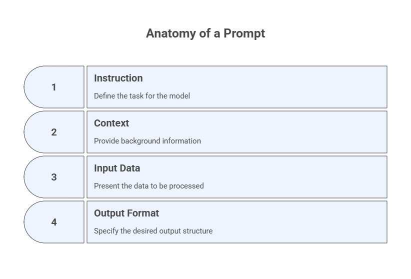
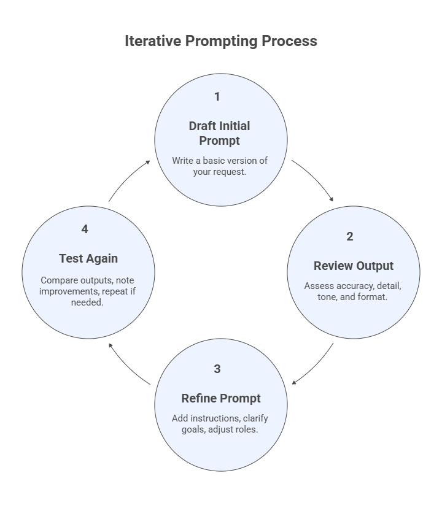

Module 5 — Fundamentals of Prompt Engineering#
Generative Artificial Intelligence (GenAI) has become one of the most transformative technological advancements of recent years, enabling systems to generate text, images, code, and even entire business solutions. To make the most of these tools, it is essential to understand not only what GenAI can do, but also how to interact with it effectively. This topic introduces the fundamentals of GenAI with a focus on Prompt Engineering—the art and science of crafting inputs that guide AI models toward accurate, creative, and useful outputs. By mastering prompt engineering, students will gain practical skills to explore the capabilities and limitations of GenAI, preparing them to apply these tools strategically in entrepreneurial and problem-solving contexts.
5.1 Learning Objectives#
Understand the purpose and scope of prompt engineering.
Identify the components that make up an effective prompt.
Identify and apply different types of prompt design patterns.
Compare how prompt structures influence AI outputs.
Practice prompt improvement through iteration.
5.2 What is Prompt Engineering?#
Prompt engineering is the practice of crafting effective inputs (prompts) for large language models (LLMs) to produce accurate, relevant, and useful outputs.
Unlike traditional programming, where you write rigid code, prompt engineering is about communicating naturally with an AI system — and doing so strategically.
5.3 Anatomy of a Prompt#
A good prompt typically includes:
Instruction: What you want the model to do.
e.g., “Summarize the text below in bullet points.”
Context (optional): Background information or framing.
e.g., “You are a customer support agent.”
Input Data: The text, question, or file the model will process.
e.g., “Customer review: The product broke in 2 days…”
Output Format (optional): Desired structure or style.
e.g., “Respond in JSON format with sentiment and category.”

5.4 Why Prompt Engineering Matters#
It boosts model performance without changing the model itself.
It helps tailor responses to specific tasks and audiences.
It allows you to guide the model toward more reliable, interpretable results.
5.5 Example Prompt#
You are a scientific editor. Summarize the text below into 3 bullet points for a general audience.
Text:
Prompt engineering is the practice of crafting effective inputs (prompts) to guide generative AI models like ChatGPT, Claude, or Gemini toward producing accurate, relevant, and useful outputs. It involves understanding how AI interprets language and strategically structuring prompts to achieve specific goals, whether it is summarizing text, generating code, analyzing data, or creating content. Good prompt engineering can significantly enhance the quality of AI responses, making it a critical skill for maximizing productivity and creativity with AI tools.
Exercise 1: Deconstruct This Prompt#
Given the prompt below, identify its components:
You are a legal assistant. Given the client's message, extract the key legal issue and relevant date in bullet points.
Message:
I was evicted without notice on June 3rd even though I paid rent until July...
5.6 Why Prompt Patterns Matter#
Prompt patterns are reusable structures that help you get consistent, high-quality results from language models. Understanding them empowers you to choose the right style for your goal.
5.7 Common Prompt Types#
Instructional Prompts Directly ask the model to perform a task, e.g.:
Summarize the following article in three sentences. [Input article]
Role-Based Prompts Assign the model a specific identity or role to guide tone and knowledge.
You are a career coach. Give me advice on how to negotiate a salary raise.
Chain-of-Thought Prompts Encourage step-by-step reasoning or breakdown of complex tasks.
What is the square root of 144? Explain the steps before giving the answer.
Zero-Shot Prompts Provide only the instruction and input — no examples.
Translate the following sentence into Portuguese: "How are you?"
Few-Shot Prompts Include examples of input/output pairs to guide the model.
Translate the following:
English: Good morning → Portuguese: Bom dia
English: Thank you → Portuguese: Obrigado
English: I’m hungry → Portuguese:
Note: a prompt can be of more than one type simultaneously, e.g. Prompt 1 above is also a zero-shot prompt.
5.8 Prompt Comparison#
Pattern |
Use Case |
Example Role/Task |
|---|---|---|
Instructional |
Clear single-step tasks |
“Summarize this paragraph.” |
Role-Based |
Tone/personality alignment |
“You are a financial advisor…” |
Chain-of-Thought |
Complex reasoning, multi-step problems |
“Explain each step before giving the answer.” |
Zero-Shot |
Fast and generic tasks |
“Translate to Spanish…” |
Few-Shot |
Custom structure or format |
“English → French examples…” |
Exercise 2: Prompt Comparison Activity#
Use the following task and try prompting it in three different styles.
Task: Recommend three books for someone interested in artificial intelligence.
5.9 Why Iteration Matters#
Prompting is often not a one-shot process. Even good prompts may return incomplete, vague, or misleading results. The key is to test, analyze, and refine.
Iteration helps you:
Clarify vague requests
Add or remove unnecessary detail
Adjust tone or output format
Explore different framing approaches
5.10 The Iterative Prompting Process#
Draft the initial prompt
Write a basic version of your request.Review the output
Is it accurate? Detailed enough? In the right tone or format?Refine the prompt
Add missing instructions, clarify goals, or adjust roles.Test again
Compare outputs, note improvements, and repeat if needed.

Exercise 3: Prompt Iteration and Debugging Examples#
Poor Prompt:
Explain the stock market.
Improved Prompt (Iteration 1):
Explain the stock market in simple terms for a high school student, using 3 key points.
Improved Prompt (Iteration 2):
Explain the stock market in simple terms for a high school student. Use 3 bullet points and include one analogy related to daily life.
Exercise 4: Prompt Experiment Classwork#
You support retail sales analysis at Contoso. The VP of Regional Sales needs an assessment to guide monthly discount strategies.
Task: Compare net ‘ Sales’ for this observation to average for all ‘Product’ sold under this ‘Discount Band’, and ‘ Sales’ for this ‘Product’ in this ‘Month’.
| Segment | Country | Product | Discount Band | Sales | Month | Year |
| Government | United States of America | Montana | Medium | 178500.35 | October | 2014 |
Step 1 – Chain-of-Thought (show your work):
1. Compare Averages: Current vs average Sales with this Product and Discount Band, and vs average Sales with this Product and Month.
2. Compare Segment: Calculate and compare this point to performance of this Product in each other Segment in this Country.
3. Compare Country: Calculate and compare this point to all performance in the Country, and performance in all Countries.
4. Compare Product: Calculate and compare this point to all performance of this Product, and performance of all Products.
5. Compare and Discuss: Review this point in comparison to historical, country, and product performance, and infer overall performance.
Step 2 – Analysis:
Write a concise paragraph identifying trends and discussing likely drivers behind any variance.
Step 3 – Prediction:
Based on findings, advise whether Contoso should continue, adjust, or halt this Discount Band.
5.11 Reverse Prompting: A Prompt Analysis Technique#
Beyond writing prompts, there are methods to analyze and understand how prompts work. These techniques help you learn, debug, and improve your prompting skills. Reverse prompting means starting from an output and asking:
What kind of prompt would generate this result?
It is useful for:
Understanding how specific outputs were created
Reverse-engineering effective prompt patterns
Teaching and learning prompt design by working backwards
Reverse prompting is not a prompt type itself — it is an analytical method for understanding model behavior and improving your own prompt engineering skills.
To reverse-prompting you can use a technique called meta-prompt, which asks the LLM to reverse prompt an output. Here is a general-purpose structure you can adapt to your context and use:
Here is an AI-generated output:
[PASTE OUTPUT HERE]
Your task is to reverse prompt this output.
That means: propose one or more possible prompts that could have generated it.
Explain your reasoning and show how different phrasings might affect the response.
Reverse Prompting Example#
Output (from the AI):
1. Set a consistent study schedule.
2. Use active recall and spaced repetition.
3. Take short breaks to avoid fatigue.
Reversed Prompt:
What are three key steps a student should follow when preparing for an exam?
This shows how reverse prompting can help:
Understand AI outputs in their domain (if you see a list of steps, you can practice inferring what kind of question led to it).
Learn effective prompt patterns (e.g., phrasing requests around “three key steps” often yields structured, actionable advice).
Apply to your projects by practicing both sides: writing prompts and analyzing outputs to refine your own strategy.
Exercise 5: Reverse Prompting#
Below is an AI-generated output. Your task is to work backwards and write the possible prompt(s) that might have generated it, and then use a reverse prompt method to do the same and compare with your proposed prompts.
AI Output:
1. Identify a clear market pain point that your AI solution can address.
2. Build a prototype to demonstrate feasibility.
3. Prepare a pitch deck that communicates your value proposition and business model.
Your Task:
Propose at least two different prompts that could have led to this output.
Compare how each proposed prompt would shape the AI’s response.
Use a meta-prompt to reverse prompt this output and compare with your proposed prompts.
Here is an AI-generated output:
1. Identify a clear market pain point that your AI solution can address.
2. Build a prototype (MVP) to demonstrate feasibility.
3. Prepare a pitch deck that communicates your value proposition and business model.
Reverse prompt this output: propose at least two different prompts that might have produced it.
For each proposed prompt, explain why it would likely generate this output and how changing its phrasing might alter the answer.
5.12 Tips for Troubleshooting and Improving Prompts#
If output is too generic: Add specific instructions or examples.
If output hallucinates: Ask the model to “only use provided information” or to look for verifiable sources. You can also ask the model to cite the sources.
If output misses important parts: Reframe the prompt with clearer structure.
If output is inconsistent: Use role and format specifications.
Hallucination is when a model (confidently) outputs incorrect or invented information.
Note: Once you understand how the LLM generates its output, hallucinations become a natural outcome and our role as moderators becomes evident.
5.13 Assessing Prompt Quality#
Five criteria to judge the effectiveness of a prompt-output pair:
Criterion |
Description |
|---|---|
1. Relevance |
Is the response aligned with the prompt’s intent? |
2. Completeness |
Does the answer cover all requested aspects? |
3. Clarity |
Is the response easy to understand and well-structured? |
4. Factual Accuracy |
Are the claims and data points correct and verifiable? |
5. Format |
Does the output follow the requested format or style? |
Techniques to Reduce or Identify Hallucinations
Ask the model to cite its sources or say “Only use the provided text/file.”
Clarify that the model should say “I don’t know” if unsure.
Specify that the answer should be based only on the uploaded file or context.
Reflection#
How does communicating with an AI model differ from communicating with another person?
Which prompt pattern felt most intuitive to you, and which required the most experimentation?
How might prompt engineering change the way you research, write, or solve problems?
Reflect on how intentional interaction with AI changes your role from passive user to active collaborator.
Each prompt you craft is a design decision — shaping not just what the AI produces, but how you think about inquiry, evidence, and creativity.
Remember that the goal of prompt engineering is not perfection, but partnership: using language to co-create meaning and insight.
üìò Further Reading#
Prompt Engineering Guide, https://www.promptingguide.ai/
OpenAI Platform, https://platform.openai.com/docs/guides/prompt-engineering
White, J. et al. (2023). A Prompt Pattern Catalog to Enhance AI-Assisted Creativity and Problem-Solving., arXiv: 2302.11382 https://arxiv.org/abs/2302.11382.
Zhou, Y. et al. (2023). Large Language Models Are Human-Level Prompt Engineers., arXiv:2211.01910 https://arxiv.org/abs/2211.01910
Mollick, E. & Mollick, L. R. (2024). Co-Intelligence: Living and Working with AI., Portfolio.
Russell, S. & Norvig, P. (2020). Artificial Intelligence: A Modern Approach — Chapter 24, “Natural Language Systems and Interaction.”, Pearson.
Dendritic Institute (2025). AI Literacy Series – Module 5: Fundamentals of Prompt Engineering. (Slides & video lecture)